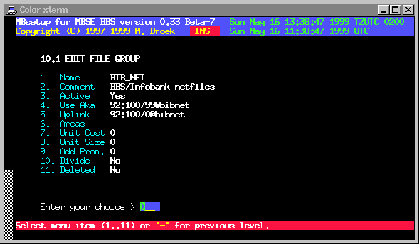

Last update 30-Jan-2001
MBSE BBS Setup - File Echo's Setup - File Groups.
Introduction.
File echo groups are to logically divide your file echo's for different file distribution networks. It makes sense to select the groups by uplink and area file that is available for that file distribution network. By doing that downlinks can connect areas that are not yet connected at your bbs but are available from your uplink. NOTE: uplink requests is not yet implemented.
Cost Sharing.
With the setup of groups you can also specify the Cost Sharing for the files distribution. The unit cost is the cost for each transmitted file if the unit size field is zero, or the unit price per transmitted unit size. The final cost is multiplied with the "Add Prom." factor to add taxes or so. Also if your uplink sends advanced .tic files, the cost found in that .tic file will be added to the cost as well. Further you can set the final price to divide between your downlinks or let them all pay the full price.
File Group Setup.
Name File Echo Group name. Comment The description of that group. Active If this group is active. Use Aka The Fidonet aka to use for this group Uplink The Fidonet aka of the uplink. Areas The name of the areas file (in ~/etc). Unit Cost The cost per unit. Unit Size The size in Kbytes per unit. Add Prom. The prommilage to add to the cost. Divide Divide cost over downlinks. Deleted If this group must be deleted.

 Back to File Echo's Setup
Back to File Echo's Setup